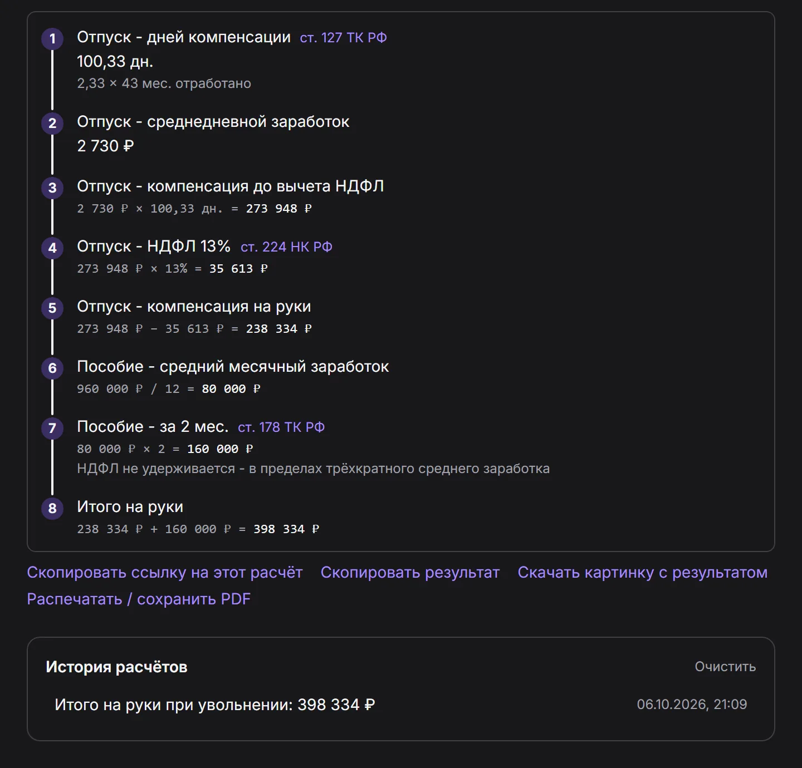
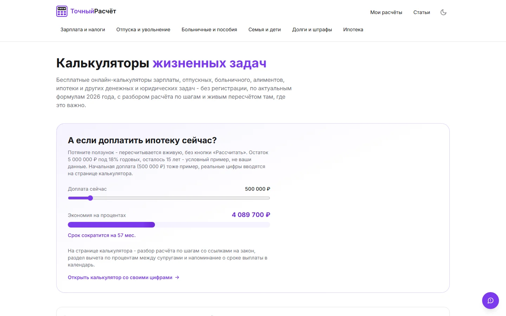
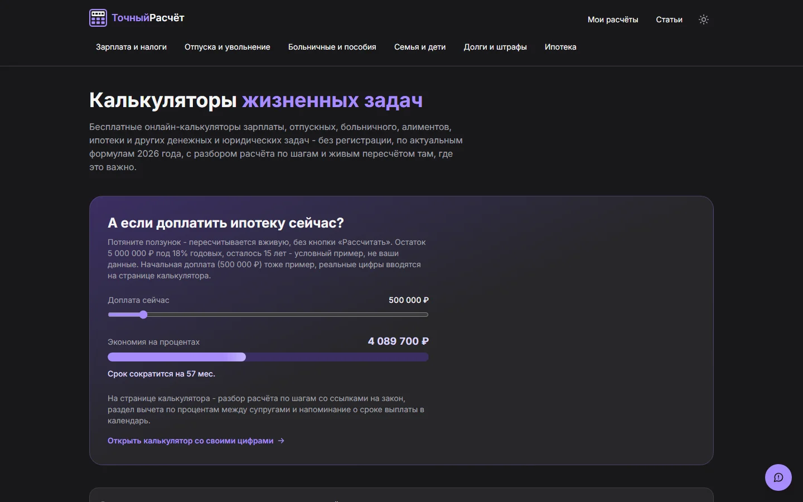
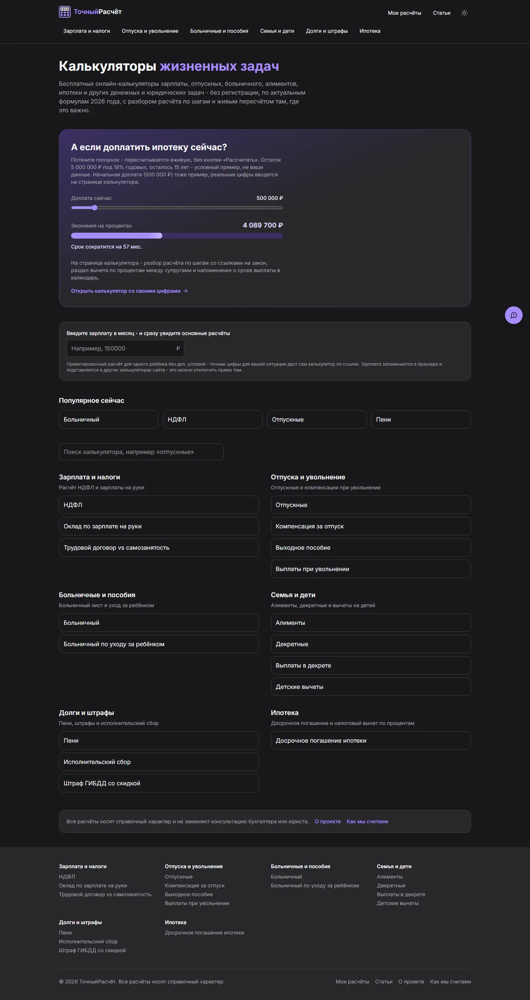

Итого на руки
398 334 ₽
выплачено
Собственный проект · 2026
ТочныйРасчёт
17 калькуляторов выплат и налогов по нормам 2026 года. Считают на лету, без кнопки «Рассчитать», и показывают, откуда взялась каждая цифра: формула и статья закона.
ст. 224 НК РФст. 127 ТК РФст. 14 закона № 255-ФЗст. 178 ТК РФст. 218 НК РФст. 217 НК РФст. 112 закона № 229-ФЗст. 81 СК РФп. 4 ст. 220 НК РФст. 75 НК РФст. 32.2 КоАП РФзакон № 422-ФЗст. 140 ТК РФст. 810 ГК РФст. 224 НК РФст. 127 ТК РФст. 14 закона № 255-ФЗст. 178 ТК РФст. 218 НК РФст. 217 НК РФст. 112 закона № 229-ФЗст. 81 СК РФп. 4 ст. 220 НК РФст. 75 НК РФст. 32.2 КоАП РФзакон № 422-ФЗст. 140 ТК РФст. 810 ГК РФ
17калькуляторов, у каждого своя страница
6категорий: от НДФЛ до ипотеки
9ползунков «а если» с пересчётом на лету
40+статей законов, на которые ссылаются расчёты
01
Расчётный листок печатается по ходу чтения
Сценарий «Выплаты при увольнении» шаг за шагом, на настоящих формулах проекта. Листайте: каждая строка появляется в момент, когда о ней речь. В конце цифры ваши.
- 1
Даты вместо догадок
Принят 15 января 2023, уволен 27 августа 2026. Полные месяцы считаются по датам, остаток от 15 дней идёт за месяц: выходит 43.
- 2
Отпуск, который не сгорает
За каждый месяц копится 2,33 дня. Неиспользованные дни за прошлые годы не пропадают, поэтому считаем за весь стаж.
- 3
Средний дневной заработок
Зарплата делится на 29,3: столько в среднем дней в месяце по правилам расчёта отпускных.
- 4
Компенсация и налог
Дни умножаются на дневной заработок, с суммы удерживается НДФЛ 13%. Остаток приходит на руки.
- 5
Выходное пособие
При сокращении положен средний месячный заработок, а если работу не нашли за два месяца, то и за второй. НДФЛ с пособия не берут.
- 6
Итог на руки
Компенсация плюс пособие. Ровно то же число показывает настоящий калькулятор на сайте.
Ваша очередь
Подставьте свои цифры
Уволен27 августа 2026
02
А если доплатить ипотеку сейчас?
Ползунок «а если» с главной страницы продукта. Та же формула аннуитета, тот же ответ: при 5 млн под 18% доплата 500 000 ₽ экономит 4 089 700 ₽.
Экономия на процентах
4 089 700 ₽
Срок сократится на 57 мес.
- Платёж в месяц
- 80 521 ₽
- Срок
- 180 → 123 мес.
03
Семнадцать калькуляторов. Настоящие экраны
Первые экраны всех калькуляторов сайта, как их видит вернувшийся посетитель: зарплата уже подставлена из профиля, результат готов. Нажмите, чтобы рассмотреть.
04
Каждая цифра с объяснением
Под любым расчётом раскрывается разбор: формула с вашими числами и ссылка на статью. Номера на снимке совпадают с пунктами списка.

- 1Восемь шагов от дат до итогаКаждый промежуточный результат виден отдельно, ничего не спрятано в «итого».
- 2Формула с вашими числамиНе «получилось столько-то», а 273 948 ₽ × 13% = 35 613 ₽.
- 3Статья закона рядом с шагомСсылка ведёт на текст нормы, на которой держится шаг.
- 4Результат можно унестиСсылка на расчёт, итог текстом, картинка или PDF.
- 5История и профиль в браузереПрошлые расчёты и зарплата запоминаются без аккаунта.
05
Тёмная и светлая тема


06
На ноутбуке, планшете и в телефоне
Одна вёрстка под все размеры: на телефоне меню прячется в бургер, поля встают в столбик, ползунки остаются удобными для пальца.

Каждая ссылка с картинкой. Сайт сам рисует карточку для мессенджеров и соцсетей под каждую страницу. Ниже настоящие, все восемнадцать.
07
Как это устроено
Только то, что есть в коде. Формулы живут отдельно от экрана, поэтому одна и та же функция считает в форме, в примере на странице и в проверочном скрипте.
lib/calculators
Формулы: чистые функции
по одному набору на калькулятор, без привязки к React
Форма калькулятора
Один общий компонент на все 17
- пересчёт на лету
- разбор по шагам
- ссылка с введёнными данными
- картинка и PDF
- история и профиль в браузере
Страница
Собирается заранее, Next.js 16
- пример расчёта и вопросы
- своя карточка для соцсетей
- запись в карте сайта
- тёмная и светлая тема
Проверка
Скрипт против опубликованных примеров
- формулы старых калькуляторов сверены с их же примерами
- расхождения правятся до публикации
APIЕдинственный серверный маршрут: кнопка «Сообщить об ошибке» отправляет письмо через nodemailer
- Next.js 16
- React 19
- TypeScript
- Tailwind CSS 4
- Inter
- nodemailer
- ESLint
- Prettier
08
Как дорабатывалось
Сценарий увольнения переписывался несколько раз. Каждый раз причиной было замечание при проверке вручную.
-
Проверка
Где сценарий, где я ставлю дату трудоустройства, дату увольнения и зарплату?
ИсправлениеПервая версия принимала суммы руками. В общий компонент форм добавлено поле «дата», полные месяцы теперь считаются по датам.
-
Проверка
А как же увольнение по собственному желанию?
ИсправлениеПособие в этом случае не гарантировано, а форма считала его всегда. Появился переключатель причины: во второй вкладке только компенсация за отпуск.
-
Проверка
А если я три года не брал отпуск?
ИсправлениеРеальная ошибка: расчёт копил не больше 12 месяцев, хотя неиспользованные дни не сгорают. Формула исправлена, тот же предел найден и убран в соседнем калькуляторе.
-
Проверка
Пройтись по всему сайту и найти ошибки.
ИсправлениеШесть багов, среди них меню на телефоне, уезжавшее за край экрана, и неверное число в примере. Формулы прогнаны скриптом против примеров на страницах: цифры сошлись.
-
Проверка
Три новые функции получились не такими.
ИсправлениеПечать, дашборд и генератор заявлений убраны целиком и сделаны заново по-другому. Сегодняшние «Мои расчёты» и PDF появились уже после этого.
Нужен сервис, где цифры можно проверить?
Напишите, что нужно считать и по каким правилам. Отвечу, как это собрать и за какое время.